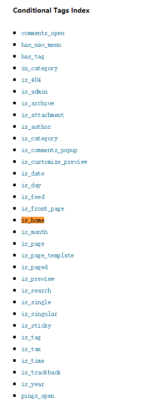

WordPress 的条件语法
在 WordPress 主题编程过程中，我们会用到多种不同的文件，比如 page.php 来展示页面的内容，single.php 来展示文章的内容，这些是特定文章内容展示的模板。除此之外，还有一些通用的模板，比如一个页面的 Header、Footer、Sidebar，这些内容我们会在每一个页面都看到。
如果你希望在不同的页面看到不同的内容，这时，就需要借助于条件语法了。借助于这些条件语法，我们可以根据具体的情况，来判断 WordPress 当前的运转情况。
常用的条件语法一般是以 is_ 开头的，比如 is_home 就是判断当前页面是不是首页。 is_feed 就是判断当前页面是不是 Feed 页面。
所有的条件语法你可以在 WordPress 文档中的 Function Reference 页面中搜索 Conditional Tags Index 来查找。

基本使用
在使用时，我们只需要在对应的模板语法中，调用条件函数来判断即可。
举个例子，如果我们需要在 侧边栏中控制显示，只有当前页面是文章页面的时候，才显示特定的内容，则我们的主题中的代码应当是这样的：
if(is_page()){
// code for show something
}
上面这段代码就是检测，当前页面是不是单页（而不是文章或者其他类型），如果是单页，就输出中括号内部的内容。
高级使用
条件语法除了不传递参数时使用，也可以传递参数来使用，一般情况下，传入的参数有三种： 数字、数组、字符串
当传入的是数字时，表示 ID 为 传入数字的内容，比如说, is_page(9) 表示当前页面是否是 ID 为 9 的页面；
当传入的是字符串时，表示标题或者Slug 为传入的字符串，比如说 ,is_category('this-is-category') 表示的是 slug 为 this-is-category 的目录。
当传入的是数组时，则表示多个条件的 or 关系，只需要满足其中一个条件，就会返回为 真。比如说， is_single(array(1,3,4)) 表示的是 ID 为 1 或 ID 为3 或 ID 为 4 的文章。
借助这些高级语法，你可以实现非常多有意思的功能，比如说：
- Side bar 可以根据页面的不同，展示不同的内容
- 目录页面可以根据不同的标题，展示独特的界面
- 页面可以根据不同的 slug ，展示不同的页面模板。
借助于条件语法，你的主题的功能会一下子超越其他人，功能看起来会非常的饱满。